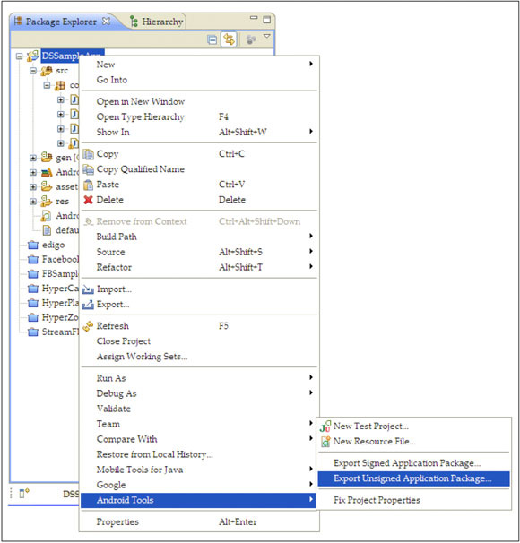
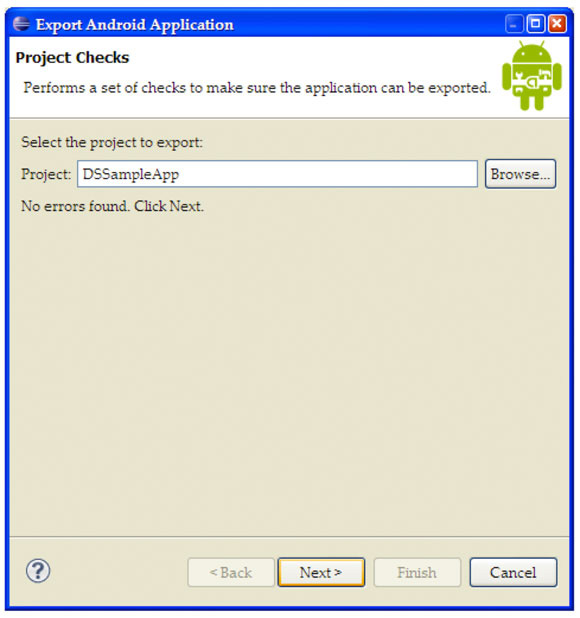

手机病毒分析实验1
实验原理
1、Android
Android一词的本义指“机器人”，同时也是Google于
2、系统简介
Android是基于Linux开放性内核的操作系统，是Google公司在
早期由原名为"Android"的公司开发，谷歌在2005年收购"Android.Inc"后，继续对Android系统开发运营，它采用了软件堆层（software stack，又名软件叠层）的架构，主要分为三部分。底层Linux内核只提供基本功能，其他的应用软件则由各公司自行开发，部分程序以Java编写。
2011年初数据显示，仅正式上市两年的操作系统Android已经超越称霸十年的塞班系统，使之跃居全球最受欢迎的智能手机平台。现在，Android系统不但应用于智能手机，也在平板电脑市场急速扩张，在智能MP4方面也有较大发展。采用Android系统主要厂商包括台湾的HTC,(第一台谷歌的手机G1由HTC生产代工）美国摩托罗拉,SE等，中国大陆厂商如：魅族（M9），华为、中兴、联想、蓝魔等。。
3、编程语言
Android 是运行于 Linux kernel之上，但并不是GNU/Linux。因为在一般GNU/Linux 里支持的功能，Android 大都没有支持，包括Cairo、X11、Alsa、FFmpeg、GTK、Pango及Glibc等都被移除掉了。Android又以bionic 取代Glibc、以Skia
取代Cairo、再以opencore 取代FFmpeg 等等。Android 为了达到商业应用，必须移除被GNU GPL授权证所约束的部份，例如Android将驱动程序移到 userspace，使得Linux driver 与 Linux kernel彻底分开。bionic/libc/kernel/ 并非标准的kernel header files。Android 的 kernel header 是利用工具由 Linux kernel header 所产生的，这样做是为了保留常数、数据结构与宏。
目前Android 的 Linux kernel控制包括安全（Security），存储器管理（Memory Management），程序管理（Process Management），网络堆栈（Network Stack），驱动程序模型（Driver Model）等。下载Android源码之前，先要安装其构建工具 Repo来初始化源码。Repo 是
Android 用来辅助Git工作的一个工具。
4、Android软件包分析
Android软件的逆向分析，主要研究.apk包。
APK是AndroidPackage的缩写，即Android安装包(apk)。APK是类似Symbian
Sis或Sisx的文件格式。通过将APK文件直接传到Android模拟器或Android手机中执行即可安装。apk文件和sis一样，把
android sdk编译的工程打包成一个安装程序文件，格式为apk。 当有新的程序需要被发布或者安装到Android手机中，都需要通过apk包。可见我们有理由掌握apk包的分析方法从而避免Android手机病毒的传播。
APK文件其实是zip格式，但后缀名被修改为apk，通过相关工具解压后，可以看到Dex文件，Dex是Dalvik VM
executes的全称，即Android Dalvik执行程序，并非Java ME的字节码而是Dalvik字节码。Android在运行一个程序时首先需要UnZip，类似Symbian那样，但和Windows Mobile中的PE文件又有区别。
下面就介绍分析Android安装包的分析方法
1.修改Android apk安装包扩展名为zip。
2.使用7zip或winrar解压缩，解压后会看到文件结构如下：
AndroidManifest.xml
classes.dex
META-INF <DIR>
res
<DIR>
resources.arsc
其中AndroidManifest.xml 是程序全局配置文件，classes.dex 是 Dalvik字节码，resources.arsc 编译后的二进制资源文件，META-INF文件夹里存放的是与程序签名相关的文件，而res则是存放资源文件的目录。
3.将AndroidManifest.xml解密成可以阅读的xml文件
运行命令：
d:\>java.exe -jar AXMLPrinter2.jar
Usage: AXMLPrinter <binary xml file>
值得注意的是，系统中应首先安装JDK才可以运行成功，此外AXMLPrinter2.jar并非JDK自带程序，请参考本实验工具目录。
AndroidManifest.xml是每个android程序中必须的文件。它描述了package中的全局数据，包括了package中暴露的组件（activities, services, 等等），它们各自的实现类，各种能被处理的数据和启动位置。
此文件一个重要的地方就是它所包含的intent-filters。这些filters描述了activity启动的位置和时间。每当一个activity（或者操作系统）要执行一个操作，例如：打开网页或联系簿时，它创建出一个intent的对象。它能承载一些信息描述了你想做什么，你想处理什么数据，数据的类型，和一些其他信息。Android比较了intent对象中和每个application所暴露的intent-filter中的信息，来找到最合适的activity来处理调用者所指定的数据和操作。
此文件还有一个非常重要的功能就是它能指定permissions和instrumentation（安全控制和测试）在AndroidManifest.xml文件中。
4.将classes.dex解析成jar。
运行dex2jar.bat可以将classes.dex解析成jar.
d:\dex2jar\dex2jar.bat
0 [main] INFO com.googlecode.dex2jar.v3.Main - version:
dex2jar file1.dexORapk file2.dexORapk ...
classes.dex是Dalvik虚拟机的执行码，也就是说程序的执行代码部分都包含在classes.dex中，解析了这个文件，也就意味着我们对整个apk安装包的行为和功能都了解了。dex有自己的特殊格式，可以通过
http://wenku.baidu.com/view/e0824629bd64783e09122b25.html
得到。
4.将jar文件解析成可阅读的java code
运行java decompiler就可以将jar文件解析，仔细阅读源代码便可完成分析
当然也可以采用另外一个工具apktool来对apk包进行解析，apktool尤其在对资源和AndroidManifest.xml的解析更加自然。
d:\>apktool.bat d 1.apk abc
I: Baksmaling...
I: Loading resource table...
I: Loaded.
I: Loading resource table from file: C:\Documents and
Settings\J\apktool\frame
work\1.apk
I: Loaded.
I: Decoding file-resources...
I: Decoding values*/* XMLs...
I: Done.
I: Copying assets and libs...
5、课外阅读――理解 Android 上的安全性
引自：http://www.ibm.com/developerworks/xml/library/x-androidsecurity/index.html
Android 包括一个应用程序框架、几个应用程序库和一个基于 Dalvik 虚拟机的运行时，所有这些都运行在 Linux® 内核之上。通过利用 Linux 内核的优势，Android 得到了大量操作系统服务，包括进程和内存管理、网络堆栈、驱动程序、硬件抽象层以及与本文主题
―― 安全性 ―― 相关的服务。
- ADT：Android 开发工具
- API：应用程序编程接口
- IDE：集成开发环境
- JDK：Java 开发包
- URL：统一资源标识符
- XML：可扩展标记语言
要跟随本文，需要具备以下技能和工具：
- 基本了解 Java™ 技术和如何使用 Eclipse（或者您喜欢的 IDE）
- Java Development Kit（需要版本 5 或 6）
- Eclipse（版本 3.4 或 3.5）
- Android SDK 和 ADT 插件
用户 ID：Linux 与 Android
在 Linux 中，一个用户 ID 识别一个给定用户；在 Android 上，一个用户 ID 识别一个应用程序。应用程序在安装时被分配用户 ID，应用程序在设备上的存续期间内，用户 ID 保持不变。权限是关于允许或限制应用程序（而不是用户）访问设备资源。
Android 使用沙箱的概念来实现应用程序之间的分离和权限，以允许或拒绝一个应用程序访问设备的资源，比如说文件和目录、网络、传感器和 API。为此，Android 使用一些 Linux 实用工具（比如说进程级别的安全性、与应用程序相关的用户和组 ID，以及权限），来实现应用程序被允许执行的操作。
概念上讲，沙箱可以表示为 图 1 所示。
图 1. 两个 Android 应用程序，各自在其自己的基本沙箱或进程上

Android 应用程序运行在它们自己的 Linux 进程上，并被分配一个惟一的用户 ID。默认情况下，运行在基本沙箱进程中的应用程序没有被分配权限，因而防止了此类应用程序访问系统或资源。但是 Android 应用程序可以通过应用程序的 manifest 文件请求权限。
通过做到以下两点，Android 应用程序可以允许其他应用程序访问它们的资源：
- 声明适当的 manifest 权限
- 与其他受信任的应用程序运行在同一进程中，从而共享对其数据和代码的访问
后者演示在 图 2 中。
图 2. 两个 Android 应用程序，运行在同一进程上

不同的应用程序可以运行在相同的进程中。对于此方法，首先必须使用相同的私钥签署这些应用程序，然后必须使用 manifest 文件给它们分配相同的 Linux 用户 ID，这通过用相同的值/名定义
manifest 属性 android:sharedUserId 来做到。
图 3 演示了很多在开发 Android 应用程序时会发现的与安全性相关的用例。
图 3. 编写 Android 应用程序时出现的安全领域

- 应用程序或代码签名是这样一个过程，即生成私有、公共密钥和公共密钥证书，签署和优化应用程序。
- 权限是 Android 平台的一种安全机制，以允许或限制应用程序访问受限的 API 和资源。默认情况下，Android 应用程序没有被授予任何权限，不允许它们访问设备上受保护的 API 或资源，从而保证了它们的安全。权限必须被请求，定义了定制的权限，文件和内容提供者就可以受到保护。确保在运行时检查、执行、授予和撤销权限。
接下来，更加详细地来看一下每个安全领域。
所有 Android 应用程序都必须被签名。应用程序或代码签名是一个这样的过程，即使用私有密钥数字地签署一个给定的应用程序，以便：
- 识别代码的作者
- 检测应用程序是否发生了改变
- 在应用程序之间建立信任
基于这一信任关系，应用程序可以安全地共享代码和数据。
使用相同数字签名签署的两个应用程序可以相互授予权限来访问基于签名的 API，如果它们共享用户 ID，那么也可以运行在同一进程中，从而允许访问对方的代码和数据。
应用程序签名首先是生成一个私有、公共密钥对和一个相关公共密钥证书，简称为公共密钥证书。
构建 Android 应用程序时可以采用调试模式和发布模式：
- 使用 Android 构建工具（命令行和 Eclipse ADT）构建的应用程序是用一个调试私有密钥自动签名的；这些应用程序被称为调试模式应用程序。调试模式应用程序用于测试，不能够发布。注意，未签名的或 者使用调试私有密钥签名的应用程序不能够通过 Android Market 发布。
- 您准备发布自己的应用程序时，必须构建一个发布模式的版本，这意味着用私有密钥签署应用程序。
Android 中的代码签名采用一种比其他移动平台中要简单得多的方式。在 Android 上，证书可以是自签名的，这就是说，无需证书授权。这种方法简化了发布过程和相关的成本。
接下来，介绍如何从命令行以及通过使用 Eclipse ADT 手动签署 Android 应用程序。本文中不介绍第三种方法，即使用 Ant。
回想一下，调试模式应用程序是使用调试密钥/证书由构建工具自动签名的。要签署一个发布模式的应用程序，首先必须生成私有、公共密钥对和公共 密钥证书。可以手动地或者通过使用 Eclipse ADT 签署应用程序。两种方法中都使用了 Java Developer Kit (JDK) keytool 密钥和证书管理实用工具。
要手动生成私有、公共密钥信息，可以从命令行使用 keytool，如
清单 1 所示。
清单 1. 使用 keytool 生成私有/公共密钥和证书
keytool -genkey -v -alias <alias_name> -keystore <keystore.name> -keyalg RSA -keysize 2048 -validity <number of days> |
注意：清单 1 假设
JDK 已安装在您的计算机上，并且 JAVA_HOME 路径被正确定义为指向您的 JDK 目录（参见 参考资料，获得下载和设置信息）。
在 清单 1 中，-genkey 表示一个公共、私有密钥对项，以及一个 X.509 v1 自签署的单个元素证书链，其中包含生成的公共密钥。-v 表示冗长模式。-alias 是用于 keystore 项的别名，keystore
存储生成的私有密钥和证书。-keystore 表示使用的密钥仓库的名称。-keyalg 是用来生成密钥对的算法。-keysize 是生成的密钥大小，其中默认大小是 1024，但是推荐大小是 2048。-validity 是有效天数；推荐采用大于 1000 的值。
注意：生成密钥之后，一定要保证密钥的安全。不要共享私有密钥，也不要在命令行或脚本中指定密钥；注 意，keytool 和 jarsigner 会提示输入密码。关于这一技巧和其他技巧，请参考 Android Developers 网站的 “Securing Your Private Key”（参见 参考资料 中的链接）。
Keytool 提示您输入名和姓、公司、城市、州、国家，从这些信息生成一个 X.500
Distinguished Name（更多信息请参见 参考资料），还要输入保护私有密钥和密钥仓库本身的密码。
对于有效期，请确保使用超出应用程序本身和相关应用程序预期生命期的时期。如果您是在 Android Market 上发布应用程序，那么有效期必须晚于 2033 年 10 月 22 日结束；否则不能上载。此外，拥有长寿命的证书让升级应用程序更为容易。幸运的是，Android Market 强制采用长寿命的证书，以帮助您避免此类问题。
接下来，使用 jarsigner 工具（它是 JDK 的一部分）签署未签名的应用程序：
jarsigner -verbose -keystore <keystore.name> <my_application.apk> <alias_name> |
在上述代码中，-verbose 表示冗长模式，-keystore 表示使用的密钥仓库的名称。接下来是应用程序的名称 (.apk)，最后是用于私有密钥的别名。
Jarsigner 提示您输入使用密钥仓库和私有密钥时的密码。
应用程序可以使用不同的密钥进行多次签名，用相同私有密钥签名的应用程序之间可以建立一种信任关系，并且可以运行在同一进程中，共享代码和数据。
签署过程的最后一步是优化应用程序，以便数据边界与文件的开始是内存对齐的，这种技术有助于改善运行时性能和内存利用率。要签署应用程序，可以使用
zipalign：
zipalign -v 4 your_project_name-unaligned.apk your_project_name.apk |
在前面的代码中，-v 表示冗长输出。数字 4 表示使用四字节对齐（总是使用四字节）。下一个参数是输入已签署应用程序的文件名 (.apk)，它必须用您的私有密钥签署。最后一个参数是输出文件名；如果覆盖现有应用程序，则添加一个 -f。
要验证应用程序已经签署，可以使用 Jarsigner，这次传递
-verify 标志：
jarsigner -verify -verbose -certs my_application.apk |
在前面的代码中，-verify 表示验证应用程序；-verbose 表示冗长模式；-certs 表示展示创建密钥的 CN 字段，最后一个参数是要验证的 Android 应用程序包的名称。
注意：如果 CN 读入 "Android Debug"，那么意味着应用程序是用调试密钥签署的，这表明不能发布；如果您计划在 Android Market 上发布您的应用程序，一定要记得使用私有密钥。
刚才学习了如何手动创建私有、公共密钥，以及签署和优化应用程序。接下来，了解如何使用 Eclipse ADT 自动创建私有、公共密钥，以及签署和优化应用程序。
使用 Eclipse ADT 创建密钥和证书，以及签署和优化应用程序
要使用 Eclipse ADT 生成密钥，必须导出应用程序。有两种方法从 Eclipse 导出应用程序：
- 导出您必须手动签署的应用程序的未签署 版本
- 导出应用程序的已签署 版本，其中所有步骤都由 ADT 为您代劳
您可以导出您必须手动签署的应用程序的未签署版本。就是说，您需要手动运行 keytool（如前所述，是为了生成密钥）和 Jarsigner（为了签署应用程序），并使用 zipalign 工具优化应用程序，跟前面解释的那样。
要使用 ADT 导出应用程序的未签署版本，可以右键单击项目并选择 Android Tools>Export Unsigned Application Package（参见 图 4）。
图 4. 导出未签署的应用程序

选中之后，ADT 提示您选择将未签署应用程序导出到的目录。记住，一旦应用程序被导出，您就必须手动签署和优化应用程序，跟前面介绍的那样。
利用 Eclipse ADT，您可以导出应用程序的已签署版本。使用这种方法，ADT 提示您输入以下内容：
- 使用现有 KeyStore 或者创建新的受保护 KeyStore 所需的信息
- 创建受保护私有密钥所需的信息
- 生成公共密钥证书所需的信息
要导出已签署的应用程序，可以右键单击项目，但是这一次选择菜单项 Android Tools->Export Signed Application Package，如 图 5 所示。
图 5. 导出已签署的应用程序

此时，Export Wizard 执行，如 图 6 所示。

在 图 7 中，选择一个现有的密钥仓库（或者创建一个新的）和证书。
图 7. Export
Wizard：密钥仓库选择

在 图 8 中，输入信息以创建私有密钥和数字证书。
图 8. Export Wizard：创建私有密钥和数字证书

在 图 9 中，输入目标文件的路径和名称，并验证有效期间。
图 9. 输入目标文件的路径和名称

完成时，您就有了一个发布模式的已签署和已优化的应用程序，您可以发布它。
另外，您也可以使用 Android Manifest 工具调用 Export Wizard，如 图 10 所示。
图 10. 使用 Android Manifest 工具调用 Export Wizard

应用程序签署之后，下一步由您在 manifest 中定义应用程序需要的权限。接下来将描述这一过程。
注意，Android Developer 网站有非常好的关于应用程序签署的文档，当有 Android 平台的新版本可用时，这些文档都会更新（参见 参考资料，了解更多信息）。
权限是一种 Android 平台安全机制，旨在允许或限制应用程序访问受限的 API 和资源。默认情况下，Android 应用程序没有被授予权限，这通过不允许它们访问设备上的受保护 API 或资源，确保了它们的安全。权限在安装期间通过 manifest 文件由应用程序请求，由用户授予或不授予。
Android 定义长长的一系列 manifest 权限，以保护系统或其他应用程序的各个方面。要请求权限，可以在
manifest 文件中声明一个 <user-permission> 属性：
<uses-permission android:name="string" /> |
其中 android:name 指定权限的名称。
要得到所有 Android 定义的 manifest 权限的列表，请参见 Manifest.permisson 页面。清单 2 是一个 manifest 文件的例子，它请求使用 Internet 的权限和写到外部存储器的权限：
清单 2. 声明（请求）权限
<?xml version="1.0" encoding="utf-8"?><manifest xmlns:android="http://schemas.android.com/apk/res/android" android:versionCode="1" android:versionName="1.0" package="com.cenriqueortiz.tutorials.datastore" android:installLocation="auto"> <application : : : </application> <uses-permission android:name="android.permission.INTERNET"/> <uses-permission android:name="android.permission.WRITE_EXTERNAL_STORAGE"/></manifest> |
应用程序可以定义它们自己的定制权限，以保护应用程序资源。其他应用程序想要访问一个应用程序的受保护资源，就必须通过它们自己的 manifest 文件请求适当的权限。清单 3 展示了一个如何定义权限的例子。
清单 3. 声明定制权限
<permission xmlns:android="http://schemas.android.com/apk/res/android" android:name="com.cenriqueortiz.android.ACCESS_FRIENDS_LIST" android:description="@string/permission_description" android:label="@string/permission_label" android:protectionLevel="normal" ></permission> |
在 清单 3 中，通过指定最少的属性，即 name、description、label 和 protectionLevel，定义了一个定制权限。也可以定义其他属性，但是这里没做介绍。
特别有趣的是 android:protectionLevel 属性，它表示系统向一个请求权限的应用程序授予（或不授予）给定的权限时应该遵循的方法。保护级别有普通 和危险。前者自动授予权限（尽管用户在安装之前总是可以重审），基于签名授予权限（就是说，如果请求权限的应用程序是用同一证书签署的）；后者表示权限给予私有数据的访问权，或者具有另一个潜在的负面影响。有关
<permission>
manifest 属性的更多信息，请参见 <permission> 页面（参见 参考资料）。
应用程序可以限制对应用程序及其使用的系统组件（比如
Activity、Service、Content
Provider 和 Broadcast Receiver）的访问。通过像 清单 4 中那样定义 android:permission 属性，很容易实现这种限制。这种级别的保护让应用程序允许或限制其他应用程序访问系统资源。
清单 4. 定义一个活动的权限
<activity android:name=".FriendsListActivity" android:label="Friends List"> android:permission="com.cenriqueortiz.android.ACCESS_FRIENDS_LIST" <intent-filter> : : </intent-filter> </activity> |
内容提供者暴露一个公共 URI，用于惟一地识别它们的数据（参见
参考资料）。要保护此内容提供者，当开始时或者从活动返回结果时，调用者可以设置
Intent.FLAG_GRANT_READ_URI_PERMISSION 和 Intent.FLAG_GRANT_WRITE_URI_PERMISSION，以便授予接收活动权限，以访问特定的数据 URI。
应用程序文件默认是受保护的。文件基于用户 ID 受保护，因而只对所有者应用程序是可访问的（此应用程序具有相同的用户 ID）。正如前面介绍的，共享相同用户 ID（并使用相同数字证书签署）的应用程序运行在相同进程上，因而共享对它们的应用程序的访问。
应用程序可以允许其他应用程序或进程访问它们的文件。这种允许是通过指定适当的 MODE_WORLD_READABLE 和 MODE_WORLD_WRITEABLE 操作模式（以便允许对文件的读或写访问）或
MODE_PRIVATE（以便以私有模式打开文件）而做到的。您可以在创建或打开文件时利用以下方法指定操作模式：
getSharedPreferences(filename, operatingMode)openFileOutput(filename, operatingMode)openOrCreateDatabase(filename, operatingMode, SQLiteDatabase.CursorFactory)
Android 提供各种 API 来在运行时检查、执行、授予和撤销权限。这些 API 是 android.content.Context 类的一部分，这个类提供有关应用程序环境的全局信息。例如，假设您想要优雅地处理权限，您可以确定您的应用程序是否被授予了访问 Internet 的权限（参见 确定 5）。
清单 5. 使用运行时 Permission API 在运行时检查权限
if (context.checkCallingOrSelfPermission(Manifest.permission.INTERNET) != PackageManager.PERMISSION_GRANTED) { // The Application requires permission to access the // Internet");} else { // OK to access the Internet} |
要了解其他在运行时检查、执行、授予和撤销权限的权限 API，请参考上下文类。
本文介绍了 Android 平台上的安全性，包括沙箱、应用程序签名、应用程序权限，以及文件和内容提供者权限。阅读完这篇介绍性文章之后，您将能够使用 Eclipse 手动创建数字证书，请求应用程序权限，以及允许或不允许应用程序访问文件和内容提供者。此外，您还简要了解了权限运行时 API，这些 API 允许您在运行时检查、执行、授予和撤销权限。